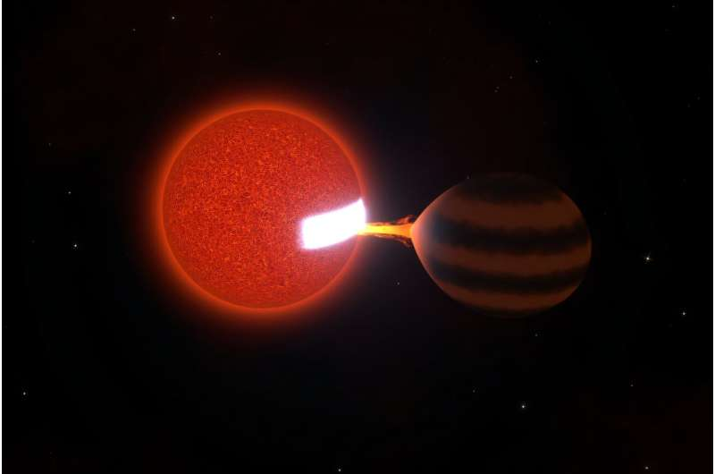

October 05, 2026
A Star Is Slowly Snacking on a Brown Dwarf — and It's Never Been Seen Before

Artist's impression by Aaron Householder (MIT)
When astronomers picture stars interacting with their companions, the script usually runs one of two ways: everything stays in a nice, stable orbit — or the star swallows its neighbor whole. Now, for the first time, scientists have caught a third option on camera: a star politely, slowly, and steadily snacking on a brown dwarf, a meal that could go on for billions of years.
The system: ZTF J0440+2325
The system sits about 300 light-years from Earth. It holds a red dwarf star weighing around 85 times as much as Jupiter, and a brown dwarf — an object more massive than a planet but not quite massive enough to be a star — weighing about 25 Jupiter masses. They orbit each other every 87 minutes, in an orbit so tight it would fit inside the Sun's diameter.
This is the first time anyone has observed a low-mass star actively accreting material from another low-mass object.
It started with a triangle
The discovery began years ago, when MIT physicist Kevin Burdge was scanning data from the Zwicky Transient Facility at Palomar Observatory and noticed a strange, repeating pattern: a triangular light curve. Most astronomical brightness patterns have familiar shapes — supernovas trace a bell curve, for instance. But this triangle repeated again and again, and nobody could explain it.
The team wondered if it might be a "black widow binary" — a dense, spinning neutron star slowly consuming a smaller companion. But the light didn't wobble the way a black widow should. The triangle just sat there, unexplained, for years.
A fireball that comes in and out of view
Recently, Burdge and MIT graduate student Aaron Householder revisited the mystery with multiple telescopes. The small measured wobble told them this wasn't a black widow at all: it was a low-mass red dwarf orbited by a brown dwarf. And at this closeness, the brown dwarf was overflowing onto its companion.
Simulations showed that matter from the brown dwarf would stream straight onto the star's surface — pummeling it at high speed and heating a bright hot spot at the impact point. Viewed from afar, that hot spot rotating in and out of view would chart as a triangle, with the peak right when the "fireball" faces us. The triangle was solved.
The slow meal
The feeding rate is tiny in stellar terms: about 1/100,000 of Earth's mass per year. At that pace, the researchers estimate the red dwarf could keep leisurely feeding on the brown dwarf for hundreds of thousands of years — even billions.
That rewrites the mental picture. The assumption has always been that a star devours whatever comes too close. Here, the alternative turned out to be real: instead of one quick gulp, a star can nibble — gently, continuously — for eons.
The finding appears today in Nature Astronomy (Aaron Householder et al., "Stable mass transfer from a substellar object onto an M dwarf"). With the triangle solved, the team is already searching for more of these slow-feeding systems — a new way for stars and their companions to interact that, until now, nobody knew existed.
Source: MIT News via Phys.org, October 5, 2026.
Source: MIT News / Phys.org — read the original report
← Back to latest stories